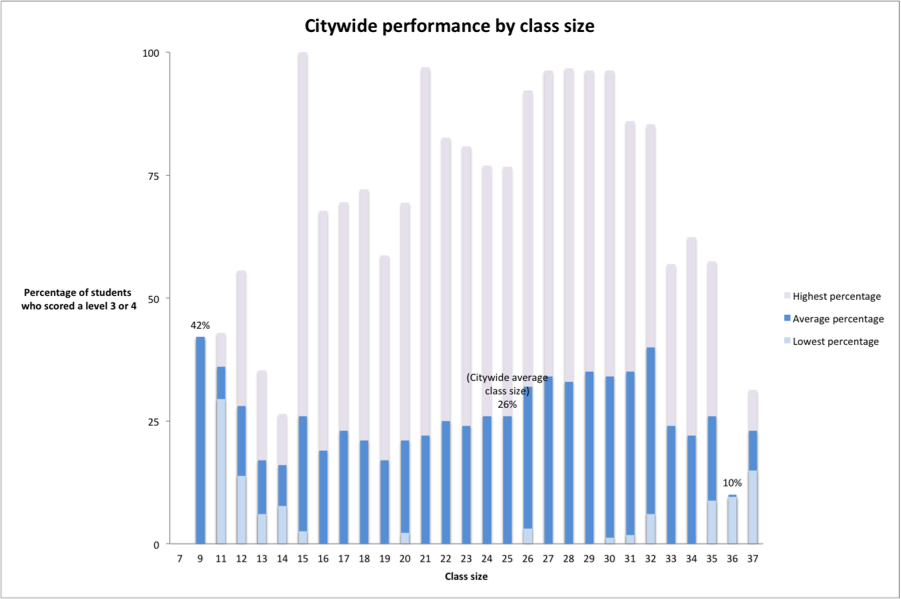

TOP CHART:

	  <div class="top-chart"> 
      <div class="inner"
         
        </div>
  <style>
    IMG.displayed {
        max-width: 100%;
        max-height: 100%;
        display: block;
        margin-left: auto;
        margin-right: auto}
    .top-chart{
      border: 1px;
      width: 100px;
      height: 100px;
    }
    .inner  {
      display: table-cell;
      height: 100px;
      width:100px;
      vertical-align: middle;
    }
    </style>

     </div>


     LEFT SIDE BAR:
 
 <html>
<head>
<style type='text/css'>
   html, body {height: 100%; margin: 0}
   #content {width: 100%; height: 100%}
   #right {width: 100px; height: 100%; float: right; background-color: #ECF1EF}
</style>
</head>
<body>
<div id='content'>
   <div id='right'>Testing</div>
  
</div>
</body>
</html>

<aside>
<h4>blurb
</h4>
<p>point one </p>
<p> point two </p>
</aside>/> 


<div class="responsive-container">
    <div class="dummy"></div>
    <div class="img-container">
         
    <style> {
      
.responsive-container {
    position: relative;
    width: 100%;
    border: 1px solid black;
}

.dummy {
    padding-top: 100%; /* forces 1:1 aspect ratio */
}

.img-container {
    position: absolute;
    top: 0;
    bottom: 0;
    left: 0;
    right: 0;
}

}
</style>


RIGHT BLURB:
<head>
<style type='text/css'>
   html, body {height: 100%; margin: 0}
   #content {width: 100%; height: 100%}
   #right {width: 230px; height: 100%; float: right; background-color: #ECF1EF}

</head>
<body>
<div id='content'>
   <div id='right'> <h4> Haimson’s findings on overcrowding include:</h4>

<b>NOISE LEVELS:</b> Crowded schools
are noisier. A study by Gary Evans, a
psychologist at Cornell University, found
that, “Teachers in noisy schools are
more fatigued, annoyed, and less patient
than teachers in quieter schools.
Teachers in noisy schools also lose instruction
time due to noise distractions
and have a compromised teaching
style. Children exposed to chronic loud
noise also experience a rise in blood
pressure and stress hormones.” 

<p> <b>DENSITY (number of people per room):</b>
Crowded schools and crowded
class- rooms have a greater density of
people. Evans found that 10-12-yearold
children tend to withdraw in overcrowded situations, and “children
may engage in withdrawal behavior as a
means of coping with an over-stimulating
environment…” </p>

<p><b>IMPACT ON CLASS SIZE:</b> Students in
crowded schools tend to have larger
class sizes, which have a negative
effect on student learning. There are
a wealth of studies, both experimental
and correlational, demonstrating that
larger classes are detrimental to student
engagement, motivation, time on task,
achievement levels, and graduation rates. 

<p> <b>RESULTS IN TERMS OF LEARNING: </b> Many
studies show an association between
overcrowding and poor student outcomes,
particularly for low-income
students. An analysis conducted by the
Teachers College of Columbia University
in 1995 found that overcrowded schools
with a high proportion of low-income
students scored as much as nine percentage
points lower on achievement
tests than similar students in less crowded
schools. Many other studies have also
found negative associations between
crowded spaces and poor academic
outcomes, particularly among lowincome
and minority students.</p>


<p><b>PSYCHOLOGICAL OUTCOMES:</b>
Substandard school environments
have adverse psychological effects on
children. A study of overcrowded and
poorly maintained schools in California
found that students in these schools
exhibited anger and shame about the
relative deprivation in their schools.
Another study found positive relationships
between school conditions and student
behavior.30 A researcher concluded that
“the depressed physical environment
of many schools…is believed to reflect
society’s lack of priority for these children
and their education.” </p>

<p><b>TEACHING:</b> Teachers are more relaxed
and more effective when schools are
in good condition and facilities are
clean and well-maintained. Studies find
that teachers are more stressed, have
more absences, and are more likely to
experience “burnout” when schools are
overcrowded.

   </div>
  
</div>
</body>
            </html>
          

     </div>